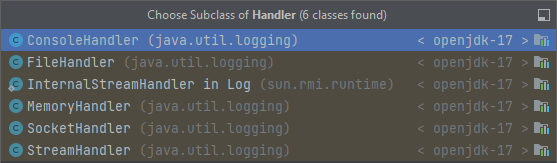

Включен в стандарт, поставляется вместе с JDK, поэтому ничего дополнительно не нужно. Имеет следующие уровни логирования по возрастанию: FINEST, FINER, FINE, CONFIG, INFO, WARNING, SEVERE, а также ALL и OFF, включающий и отключающий все уровни соответственно.
Создается вызовом одного из статических методов класса java.util.logging.Logger:
private static final Logger LOGGER = Logger.getLogger(YOURClass.class.getName()); // - логгер будет выводить информацию о классе и о потоке, где выполняется код. Чаще всего это объявляется как константа в каждом классе, о котором хотим добавить информацию в журнал.
.............
LOGGER.log(Level.INFO, "Method run() starts"); // Делаем запись в журнал в нужном месте кода
LOGGER.log(Level.INFO, "Space is set {0}, {1}", new String[] {"param1", "param2"}); // Строковое сообщение с параметрами
............
Для настройки JUL чтобы он сохранял в файл, ему нужен Handler:
FileHandler fh = new FileHandler("C:\\temp\test\MyLogFile.log"); // Файловый хендлер
SimpleFormatter formatter = new SimpleFormatter(); // Форматтер, который будет отвечать за форматирование сообщений в файле логгера
fh.setFormatter(formatter);
LOG.addHandler(fh); // Логгеру устанавливаем хендлер, можно добавить несколько хендлеров
Возможные хендлеры:

Выделяется две группы методов:
●название которых соответствует уровню логирования
// чаще и лучше использовать эту группу
○LOG.info("info");
LOG.warning("warning");
LOG.severe("severe");
●методы log, loggp, logrb, принимающие уровень логирования в качестве параметра с типом Level. // лучше использовать в случае, если мы хотим какой-то свой кастомный логгер изобрести, в котором будем писать какую-то логику в зависимости от уровня.
○LOG.log(new LogRecord(Level.INFO, stringMessage));
○LOG.logp(Level.INFO, "ClassName", "MethodName", stringMessage);
○LOG.logrb(Level.INFO, "ClassName", "MethodName", resourceBundle, "messageId");
○LOG.throwing("ClassName","MethodName", throwable);
Для задания способа вывода сообщений необходимо указать какие хендлеры он будет использовать.
FileHandler, ConsoleHandler, StreamHandler, SocketHandler, MemoryHandler.
Настройки хендлеров задаются в целом для всего класса, а не для конкретного экземпляра, что может порождать проблемы, если вам потребуется сообщения различных логгеров выводить в различные файлы или с различным форматированием.
Лучше использовать конфигурационный файл. (Если сконфигурировать JUL в коде, прийдется перекомпилировать приложение, если нужно будет изменить уровень логирования)
Пример конфигурационного файла:
# Настройки глобального логгера
handlers =java.util.logging.FileHandler // хендлер, который нужен, с полным путем
# Конфигурация файлового хендлера
java.util.logging.FileHandler.level =ALL
java.util.logging.FileHandler.formatter =java.util.logging.SimpleFormatter
java.util.logging.FileHandler.limit = 1000000 // ротейшн, указать размер в байтах для файла
java.util.logging.FileHandler.pattern = log.txt
# Конфигурация консольного хендлера
java.util.logging.ConsoleHandler.level = ALL
java.util.logging.ConsoleHandler.pattern = log.log // имя файла
java.util.logging.ConsoleHandler.formatter =java.util.logging.SimpleFormatter // форматирование файла
Чтобы JUL применил данную конфигурацию нужно передать параметр -Djava.util.logging.config.file = <путь к файлу>, либо при старте приложения выполнить код:
LogManager.getLogManager().readConfiguration(<ваш класс>.class.getResourceAsStream("logging.properties"));
---------------------------------------------------
JUL не очень хорошо работает: у него есть ограничения, он не очень универсальный. Поэтому он не очень широко используется.
Более широко используется библиотека
log4shell - уязвимость, обнаруженная в этой библиотеке